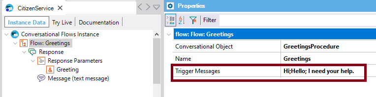
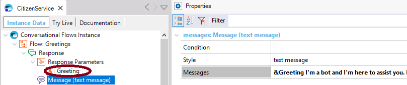
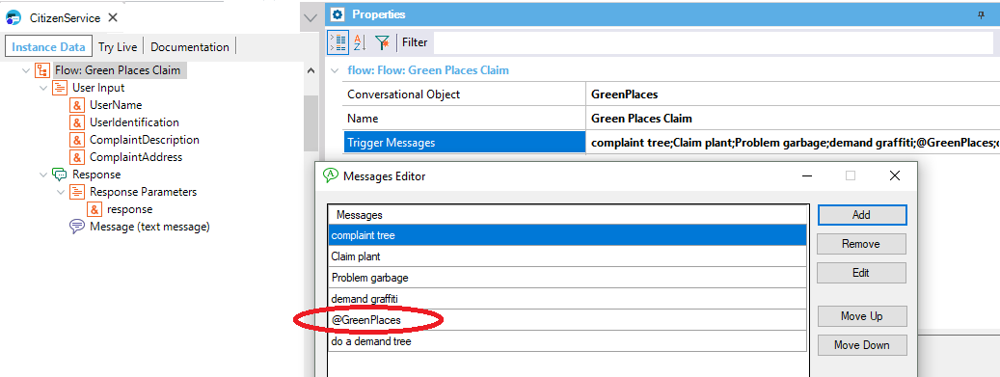

Specify the triggers messages for this flow. You can type multiple messages using the ‘;’ delimiter. Description
Trigger Messages of the Flow help train the AI engine to recognize the intents in user input. Samples
I. The "Greetings" Flow of a conversational instance can be defined as follows. The Trigger messages are the following:  When the intent is detected, the Flow is executed as it has been modeled. parm(out:&Greeting);
&datetime = now()
if &datetime.Hour() >= 12
&Greeting =!"Good afternoon!"
else
&Greeting = !"Good morning"
endif
In order to display the greeting to the final user, the Messages property uses the &Greeting contextual parameter.  II. The Trigger messages can include the reference to an entity, which is represented as @EntityName. This is for the better recognition of the Intent. It's supported only for Watson NLP Provider. That means that the trigger message may match with any value of the entity.  AvailabilityThis property is available since GeneXus 15 upgrade 12. Scope Objects: Conversational Flows See Also
|